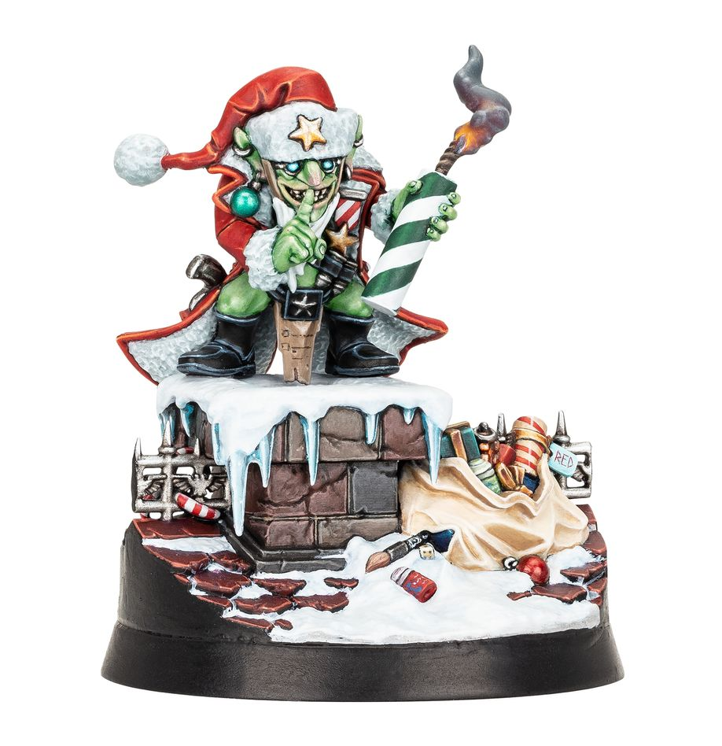
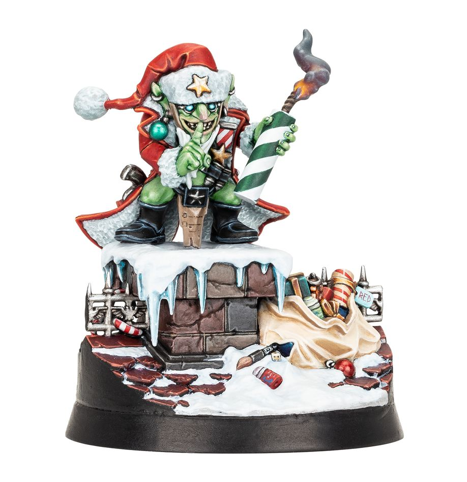
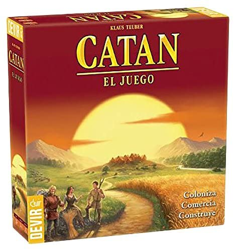
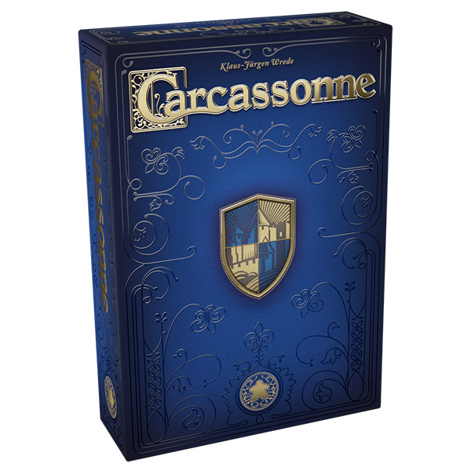
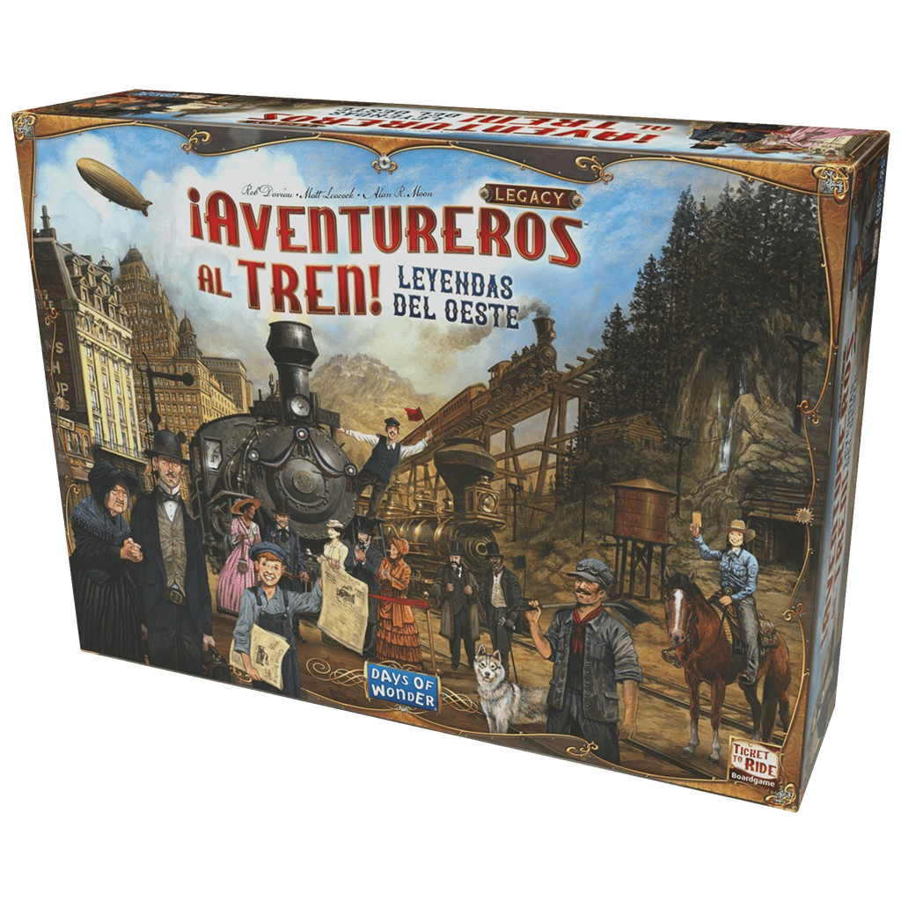

Hermosa miniatura navideña
Celebra las fiestas de 2023 con esta traviesa mascota
El Gobbo Rojo
Celebra las fiestas de 2023 con esta traviesa mascota
El Gobbo Rojo
Colecciona, monta, pinta, juega, lee… Tu nuevo hobby te aguarda.
Nuevo vídeo promocional del último videojuego de Age of Sigmar
Aquí mostramos el catálogo de juegos disponible en nuetra tienda
| Nombre | Imágen | Precio | Descripción |
|---|---|---|---|
| Catán | Carcassonne: 20 Aniversario | Marvel Champions LCG | ¡Aventureros al tren! |
|  |  |  |
 |